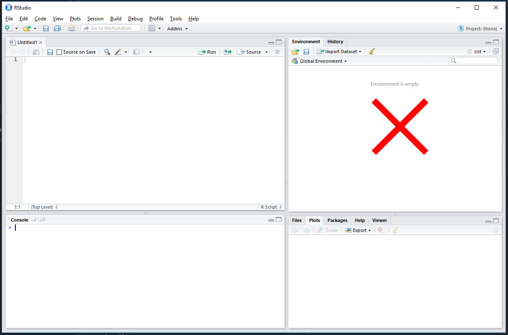
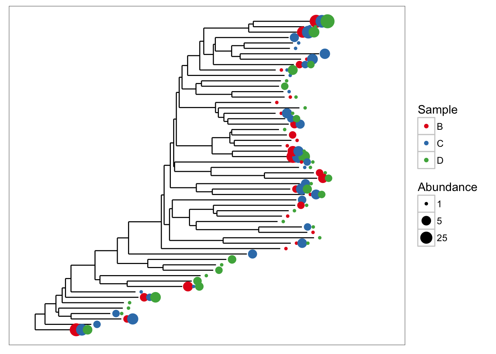

BL6024 - Quantitative Skills for Biologists using R
Lecture 01: Introduction to R and R Studio
Required software
R
Available at https://cran.r-project.org/mirrors.html
R studio
Available at https://www.rstudio.com/
Course tutors
Tom Reed
 Javi Del barco-Trillo
Javi Del barco-Trillo
 Adam Kane
Adam Kane
 Emma Critchley
Emma Critchley
James Savage
 Anthony Caravaggi
Anthony Caravaggi
Suggested reading

Why R?
- It's free
- Customizable, extensible
- An abundance of libraries
- Full programming language
- Collaboration with colleagues
- Support for reproducible analysis
- Methods of publishing code and results
- Distributable computing
And much more.
What is R?
R refers to the progamming language and software environment
RStudio =/= R
- R is the engine
- R studio is the dashboard and steering wheel- point 1
Many functions are in packages/libraries which must be installed and loaded
- Reinstall for each version of R
The R Studio GUI

The R Studio GUI - Code

The R Studio GUI - Environment

The R Studio GUI - Files, Plots, Packages, etc.

The R Studio GUI - Console

What can we do with R?
- Simple calculations
- Data cleaning and organisation
- Simple stats tests
- Advanced stats tests
- Complex models
- Phylogenetic analyses
- Network analyses
- Spatial analysis
And much more.
Examples
Data exploration

Examples
3D plots

Examples
Kernel Density Estimation

Examples
Tree plots

Examples
Mapping

Setting your work environment
Before beginning work in R, you should specify your working directory. This is the root directory which contains (and will contain) all files and subfolders relevant to your analyses.
setwd("C:/Users/Anthony Caravaggi/Dropbox/GitHub/BL6024_UCC_2017/Lecture 01")
R Console
In the R console, you can enter numbers, perform calculations, and run code.
3 + 5
## [1] 8
3 - 5
## [1] -2
3 * 5
## [1] 15
Saving code
Any code entered in the Console will not be saved. All code should be entered in the code window and the file saved.
Commenting on code
Be sure to comment on your code for future reference and to ease replication by other users.
# Anything preceded by hashtags is ignored by R
# Hashtags don't flow to the next line!
# An example comment would be:
# Finding the square root of integers as an example of basic R functionality
sqrt(34 + 12)
## [1] 6.78233
Comments do not have to be wordy or complex but must be clear.
Assigning variables
x <- 3 + 5
x = 3 + 5
x
## [1] 8
The "<-" or "=" tells R to take the equation to the right of the symbol and store it in a variable whose name is given on the left.
Any data entered or calculations performed which are not assigned to variables will not be saved.
Vectors
Lists of integers or characters (strings) can be stored. These are known as vectors.
x <- c(2, 4, 6, 8, 10)
y <- c("two", "four", "six", "eight", "ten")
x
## [1] 2 4 6 8 10
y
## [1] "two" "four" "six" "eight" "ten"
Sequences and repetition
a <- c(1:10)
b <- seq(1,10, by = 0.5)
a
## [1] 1 2 3 4 5 6 7 8 9 10
b
## [1] 1.0 1.5 2.0 2.5 3.0 3.5 4.0 4.5 5.0 5.5 6.0 6.5 7.0 7.5
## [15] 8.0 8.5 9.0 9.5 10.0
Sequences and repetition
c <- rep(5,10)
d <- rep(c("A","B","C"),2)
c
## [1] 5 5 5 5 5 5 5 5 5 5
d
## [1] "A" "B" "C" "A" "B" "C"
Random numbers
For a vector of 5 numbers
runif(5)
## [1] 0.11734613 0.53773981 0.13314183 0.45072312 0.06792998
5 numbers between 5 and 20
runif(5, min=5, max=20)
## [1] 5.669534 10.170092 11.389840 19.665348 7.642187
Similarly
sample(5:20, 5, replace=TRUE)
## [1] 8 16 5 15 15
To generate random numbers from a normal distribution
rnorm(5)
## [1] 1.00511103 0.02999644 0.63816588 0.35088240 1.17454193
With a specfied mean and standard deviation
rnorm(5, mean=6, sd=1.2)
## [1] 7.229276 5.422180 5.037910 4.689769 3.847081
To make your random numbers repeatable, use set.seed
set.seed(42)
rnorm(5, mean=6, sd=1.2)
## [1] 7.645150 5.322362 6.435754 6.759435 6.485122
Extracting data
4th element of vector a (first element is element 1)
a[4]
## [1] 4
Second and fifth element of b
b[c(2,5)]
## [1] 1.5 3.0
Calculations with objects
Numeric objects can be adjusted according to a single number
x <- c(2, 4, 6, 8, 10)
x + 1
## [1] 3 5 7 9 11
Or pairwise, by another object
x <- c(2, 4, 6, 8, 10)
y <- c(1, 2, 3, 4, 5)
x/y
## [1] 2 2 2 2 2
Mathematical operators
To take the square root, find e raised to each number, etc., use the usual commands
sqrt(x)
## [1] 1.414214 2.000000 2.449490 2.828427 3.162278
exp(x)
## [1] 7.389056 54.598150 403.428793 2980.957987 22026.465795
log(x)
## [1] 0.6931472 1.3862944 1.7917595 2.0794415 2.3025851
Mathematical operators
By combining operations and using parentheses you can make more complicated expressions
c <- (x + sqrt(x))/(exp(x)+1)
c
## [1] 0.4069842330 0.1079172598 0.0208924040 0.0036313144 0.0005975394
Logical operators
3 + 5 == 8 # equal to
## [1] TRUE
3 + 5 != 9 # not equal to
## [1] TRUE
3 + 5 >= 8 # greater than or equal to
## [1] TRUE
3 + 5 < 12 # less than
## [1] TRUE
Vector length
When you do operations on vectors they are performed on an element by element basis. All of the vectors in an expression must be the same length, or else the shorter vector will loop.
a <- c(1,2,3)
b <- c(10,11,12,13)
a+b
## Warning in a + b: longer object length is not a multiple of shorter object
## length
## [1] 11 13 15 14
Accounting for Class
Certain functions cannot be applied to certain data classes. To find out the class of your data:
x <- c(2, 4, 6, 8, 10)
y <- c("two", "four", "six", "eight", "ten")
class(x)
## [1] "numeric"
class(y)
## [1] "character"
Accounting for Class
For example, you cannot use arthimetic with a character object
x + y
## Error in x + y: non-numeric argument to binary operator
You can change a vector's class, but be careful - this can have implications elsewhere in your code!
x2 <- as.character(x)
class(x2)
## [1] "character"
Descriptive statistics
Simple commands can be used to derive basic descriptive statistics for objects
x <- c(2, 4, 6, 8, 10)
mean(x)
## [1] 6
summary(x)
## Min. 1st Qu. Median Mean 3rd Qu. Max.
## 2 4 6 6 8 10
Factors
Sometimes an experiment includes different levels of some explanatory variable. The different levels are also called factors. Factors are treated differently than ordinary vectors. For example, when you use summary on a factor,it prints out the possible values and their frequencies rather than the five-point summary.
x <- sample(4:10, 50, replace=TRUE)
summary(x)
## Min. 1st Qu. Median Mean 3rd Qu. Max.
## 4.0 6.0 7.0 7.4 9.0 10.0
x <- factor(x)
summary(x)
## 4 5 6 7 8 9 10
## 7 4 6 9 5 7 12
Exercise
Explore arthimetic and creating vectors in R.
Data frames
A data frame is a collection of related objects. They can be created manually (here an example based on blue tits (Cyanistes caeruleus)...
sp <- rep("BLUTI", 50) # repeat a string or number x times
wi <- sample(57:69, 50, replace=TRUE) # generate a vector of given length between integers
we <- runif(50, min=8, max=13) # as above, but allows generation of decimal data
btDat <- data.frame(sp, wi, we)
head(btDat)
## sp wi we
## 1 BLUTI 65 11.04469
## 2 BLUTI 69 12.18401
## 3 BLUTI 66 11.75761
## 4 BLUTI 64 10.26366
## 5 BLUTI 68 10.67895
## 6 BLUTI 59 10.68688
All values of the same variable must be contained within the same column
## cold warm hot
## 1 13.4 9.5 21.0
## 2 18.1 12.3 18.3
## 3 11.9 10.4 17.6
This is not a dataframe.
A dataframe based on these data would need two columns:
- Levels (cold, warm, hot)
- Response (measurments)
library(reshape2)
v2 <- melt(v)
## No id variables; using all as measure variables
colnames(v2) <- c("temperature", "r_time")
v2
## temperature r_time
## 1 cold 13.4
## 2 cold 18.1
## 3 cold 11.9
## 4 warm 9.5
## 5 warm 12.3
## 6 warm 10.4
## 7 hot 21.0
## 8 hot 18.3
## 9 hot 17.6
Data frames
Data can also be read from external files. csv and txt are the easiest and most frequently used. Here we have a dataset based on great tits (Parus major)
gtDat <- read.csv("assets/img/gtDat.csv", header = TRUE, row.names = 1)
summary(gtDat)
## sp wi we
## GRETI:50 Min. :69.00 Min. :15.20
## 1st Qu.:70.25 1st Qu.:16.61
## Median :73.50 Median :17.79
## Mean :74.08 Mean :17.97
## 3rd Qu.:77.00 3rd Qu.:19.37
## Max. :81.00 Max. :20.98
str(gtDat)
## 'data.frame': 50 obs. of 3 variables:
## $ sp: Factor w/ 1 level "GRETI": 1 1 1 1 1 1 1 1 1 1 ...
## $ wi: int 70 75 70 74 69 69 73 74 81 71 ...
## $ we: num 16.4 16 19.1 20.8 17.1 ...
dim(gtDat)
## [1] 50 3
Data frame attributes
names(btDat)
## [1] "sp" "wi" "we"
colnames(btDat)
## [1] "sp" "wi" "we"
class(btDat)
## [1] "data.frame"
Data frame attributes
attributes(btDat)
## $names
## [1] "sp" "wi" "we"
##
## $row.names
## [1] 1 2 3 4 5 6 7 8 9 10 11 12 13 14 15 16 17 18 19 20 21 22 23
## [24] 24 25 26 27 28 29 30 31 32 33 34 35 36 37 38 39 40 41 42 43 44 45 46
## [47] 47 48 49 50
##
## $class
## [1] "data.frame"
Data frames
We can use the same commands to explore or manipulate the data as we would with individual objects. We use $ to specify columns in a data frame.
mean(btDat$wi)
## [1] 62.7
max(btDat$we)
## [1] 12.81285
We can also derive estimates for different levels within a dataframe.
tDat <- read.csv("assets/img/tDat.csv", header = TRUE, stringsAsFactors=FALSE)
head(tDat)
## ï..Date Code Sp_C Sp_L Type Age Sex Wing Weight
## 1 19/06/2011 BLABI Blackbird Turdus merula N 3 JM 135 98.8
## 2 01/07/2011 BLABI Blackbird Turdus merula R 3 J 126 88.4
## 3 01/07/2011 BLABI Blackbird Turdus merula N 3 J 127 89.8
## 4 07/08/2011 BLABI Blackbird Turdus merula N 3 J 132 91.1
## 5 07/08/2011 BLABI Blackbird Turdus merula N 3 J 131 95.3
## 6 13/08/2011 BLABI Blackbird Turdus merula N 3 M 129 101.3
summary(tDat)
## ï..Date Code Sp_C
## Length:317 Length:317 Length:317
## Class :character Class :character Class :character
## Mode :character Mode :character Mode :character
##
##
##
## Sp_L Type Age Sex
## Length:317 Length:317 Min. :1.000 Length:317
## Class :character Class :character 1st Qu.:3.000 Class :character
## Mode :character Mode :character Median :4.000 Mode :character
## Mean :4.237
## 3rd Qu.:5.000
## Max. :6.000
## Wing Weight
## Min. : 23.00 Min. : 6.60
## 1st Qu.: 61.00 1st Qu.: 10.20
## Median : 68.00 Median : 15.90
## Mean : 74.16 Mean : 25.51
## 3rd Qu.: 75.00 3rd Qu.: 18.80
## Max. :163.00 Max. :190.00
by(tDat, tDat$Sp_C, function(x) {mean.w <- mean(x$Weight)})
## tDat$Sp_C: Blackbird
## [1] 94.74444
## --------------------------------------------------------
## tDat$Sp_C: Blackcap
## [1] 23.1
## --------------------------------------------------------
## tDat$Sp_C: Blue tit
## [1] 10.48929
## --------------------------------------------------------
## tDat$Sp_C: Chiffchaff
## [1] 7.9225
## --------------------------------------------------------
## tDat$Sp_C: Great tit
## [1] 17.89367
## --------------------------------------------------------
## tDat$Sp_C: Green woodpecker
## [1] 190
## --------------------------------------------------------
## tDat$Sp_C: Robin
## [1] 18.46842
## --------------------------------------------------------
## tDat$Sp_C: Wren
## [1] 10.23448
Data frames - plotting data
plot(tDat$Wing, tDat$Weight)
hist(btDat$we)

Extract values from data frame
btDat[,3] # 4th column of matrix
## [1] 11.044687 12.184008 11.757613 10.263658 10.678950 10.686883 8.006904
## [8] 9.778330 11.060665 12.144711 9.783610 10.053176 10.867379 10.948392
## [15] 11.598286 9.974865 12.596020 12.812851 9.167618 11.622488 12.518173
## [22] 11.017370 11.157536 12.686929 12.252414 10.899104 12.107020 8.568593
## [29] 11.822539 11.118067 8.742233 8.401322 10.320348 11.896841 11.667640
## [36] 12.086152 8.850812 12.723602 9.468119 8.745360 11.596893 9.620430
## [43] 11.894047 9.972205 11.392964 11.879125 8.939345 8.145429 8.678569
## [50] 11.400821
btDat[4,] # 4th row of matrix
## sp wi we
## 4 BLUTI 64 10.26366
Extract values from data frame
btDat[2:4,1:3] # rows 2-4 of columns 1-3
## sp wi we
## 2 BLUTI 69 12.18401
## 3 BLUTI 66 11.75761
## 4 BLUTI 64 10.26366
We can also subset our data, to extract rows containing specific values.
tDat[tDat$Sp_C == "Green woodpecker", ]
## ï..Date Code Sp_C Sp_L Type Age Sex Wing
## 249 26/06/2011 GREWO Green woodpecker Picus viridis N 6 F 163
## Weight
## 249 190
We can also base subsets on multiple options.
cchaff <- tDat[ which(tDat$Sp_L=='Phylloscopus collybita' & tDat$Age == 4), ]
cchaff
## ï..Date Code Sp_C Sp_L Type Age Sex Wing
## 157 23/04/2011 CHIFF Chiffchaff Phylloscopus collybita N 4 M 61
## 158 23/04/2011 CHIFF Chiffchaff Phylloscopus collybita N 4 M 62
## 159 26/06/2011 CHIFF Chiffchaff Phylloscopus collybita N 4 61
## 160 07/08/2011 CHIFF Chiffchaff Phylloscopus collybita N 4 F 54
## 161 14/07/2012 CHIFF Chiffchaff Phylloscopus collybita N 4 F 54
## 162 12/05/2013 CHIFF Chiffchaff Phylloscopus collybita N 4 M 64
## 163 20/06/2014 CHIFF Chiffchaff Phylloscopus collybita N 4 F 61
## 164 23/05/2015 CHIFF Chiffchaff Phylloscopus collybita N 4 68
## 165 23/05/2015 CHIFF Chiffchaff Phylloscopus collybita N 4 M 64
## Weight
## 157 8.2
## 158 7.8
## 159 7.7
## 160 7.1
## 161 6.8
## 162 8.6
## 163 8.4
## 164 8.6
## 165 7.8
robin <- tDat[ which(tDat$Code=='ROBIN' & tDat$Age == 3 & tDat$Weight >= 18), ]
robin
## ï..Date Code Sp_C Sp_L Type Age Sex Wing Weight
## 254 28/05/2004 ROBIN Robin Erithacus rubecula N 3 J 71 18.3
## 255 28/05/2004 ROBIN Robin Erithacus rubecula N 3 J 73 18.2
## 256 11/12/2010 ROBIN Robin Erithacus rubecula R 3 71 18.2
## 257 11/12/2010 ROBIN Robin Erithacus rubecula R 3 75 19.3
## 259 26/06/2011 ROBIN Robin Erithacus rubecula N 3 J 73 19.0
## 260 01/07/2011 ROBIN Robin Erithacus rubecula N 3 J 72 18.7
## 262 07/08/2011 ROBIN Robin Erithacus rubecula R 3 J 73 18.8
## 263 19/05/2012 ROBIN Robin Erithacus rubecula N 3 J 72 18.2
## 264 27/07/2013 ROBIN Robin Erithacus rubecula N 3 J 73 19.7
## 267 22/09/2013 ROBIN Robin Erithacus rubecula N 3 J 71 19.2
## 268 20/06/2014 ROBIN Robin Erithacus rubecula N 3 J 75 18.4
Matrix
Matrices are data arranged in a two-dimensional, rectangular layout, where all cell types are the same
a <- c("Hungry","Fed","Hungry","Hungry","Fed","Hungry","Fed","Fed")
b <- c("Yes","No","Yes","Yes","No","No","Yes","No")
t <- table(a,b)
t
## b
## a No Yes
## Fed 3 1
## Hungry 1 3
The table command allows us to do a very quick combination, and gives us a quick overview of the data.
Matrices can also be entered manually.
cDat <-matrix(c(34, 12, 41, 7),ncol=2,byrow=TRUE)
rownames(cDat)<-c("male","female")
colnames(cDat)<-c("robin","goldc")
cDat <- as.table(cDat)
cDat
## robin goldc
## male 34 12
## female 41 7
The byrow=TRUE option indicates that the numbers are filled in across the rows first, and the ncols=2 indicates that there are two columns.
Lists
Lists are vectors containing other objects
lis <- list(l1 = 1:10, l2 = seq(0, 1, length.out = 5))
lis
## $l1
## [1] 1 2 3 4 5 6 7 8 9 10
##
## $l2
## [1] 0.00 0.25 0.50 0.75 1.00
Tidying and saving
You can save your dataframes to csv or text files
write.csv(cchaff, "chiffchaff_data.csv")
You can remove any objects from your working environment using the rm command
rm(cchaff)
rm(robin, greti)
## Warning in rm(robin, greti): object 'greti' not found
Exercise
Generate two character and four numerical vectors
Combine these vectors into a data frame
Explore these data to retrieve summary statistics and plots
Exercise
Load the data file tdat which was distributed prior to this class.
Read the csv and explore the data. Answer the following questions:
- How many species are detailed in these data?
- What is the name of the third column?
- What is the value of the data in the 2nd column, 57th row?
- What data are on the 12th, 87th and 197th rows?
- What is the median wing length across all species?
- What is the square root of the value in the 3rd column, 70th row?
- What are the sex, age, wing length and weight of the Blackcap?
- How many Blackbirds of age 6 have a wing length of over 130 cm?
Packages
A bundle of code, data, documentation, and tests developed by the community
- Easy to share
- Often stored on repositories (repos)
- Over 10,000 packages on the Comprehensive R Archive Network, or CRAN
- Stored in your R library
Which package do I use?
- Refer to papers using the same analyses
- Refer to CRAN's index (https://cran.r-project.org/web/views/)
- Ask colleagues
Install from CRAN with install.packages("x") where x = the name of the package
Use in R with library("x")
Help within R
- help("sqrt")
- ?sqrt
- help.start()
- apropos("test")
- help.search("Linear Model")
- RSiteSearch("An Introduction to R")
help and ? are equivalent functions help.start() opens HTML documentation directly in the browser apropos looks for every function that contains a given pattern in their name help.search searches the help files of the installation. RSiteSearch searches on-line sources via the browser
Help within R
Package vignettes
- How-to guides for topics with simple introductions and examples
- To get a list of all available vignettes type
vignette() - Use the
openVignette()command to open it - Get help with
package?xandhelp(package = "x")
Troubleshooting and getting help
Google
Stack Overflow - https://stackoverflow.com/questions/tagged/r
Reddit - http://www.reddit.com/r/rstats
Facebook - R-Space (https://www.facebook.com/groups/308600982528221)
R Cookbook - http://www.cookbook-r.com/
R Reference Card - https://cran.r-project.org/doc/contrib/Short-refcard.pdf
RStudio Cheat Sheets - https://www.rstudio.com/resources/cheatsheets/
RSeek - http://rseek.org/
UCC R Stats Mailing List
https://github.com/arcaravaggi/BL6024_UCC_2017/blob/master/UCCRstats_list_intro.md
Join the list by sending a blank email to UCCRSTATS-L-subscribe-request@lists.ucc.ie